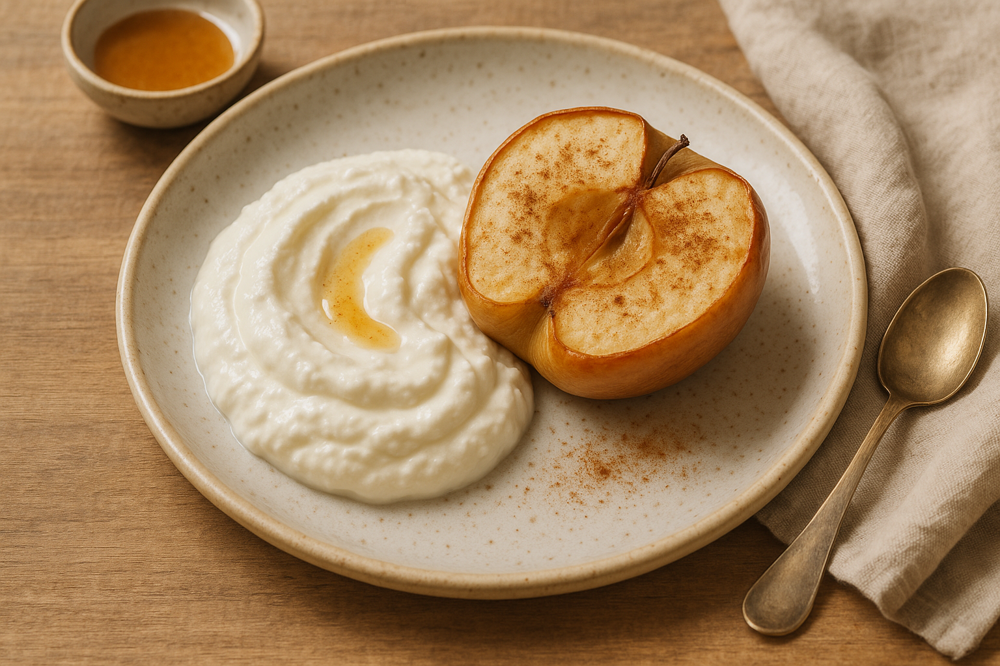
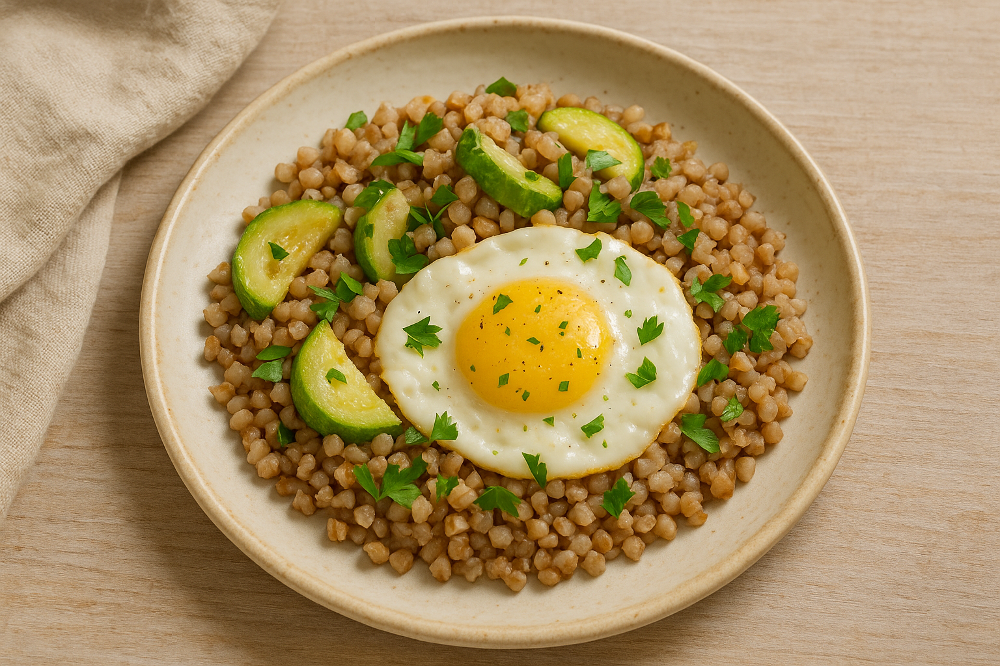

Август 2025
Маргарита
9 персональных рецептов
Wellness by Dr. Svetlana
Дорогая Маргарита,
Эта книга создана специально для вас. Каждый рецепт подобран с учётом вашего здоровья, предпочтений и целей. Здесь нет случайных блюд — только то, что поддержит ваш организм именно сейчас.
9 рецептов на следующий месяц — это ваша кулинарная основа. Завтраки для энергичного утра, обеды для продуктивного дня, ужины для восстановления.
Готовьте их в любом порядке, миксуйте, адаптируйте под настроение. К каждому рецепту я добавила личную рекомендацию — почему это блюдо важно именно для вас.
Помните: еда — это не ограничения, а забота. Готовьте с удовольствием, без спешки. Наслаждайтесь процессом и результатом.
Ваша Светлана

Яйца-пашот с авокадо и зеленью
Поддержка сердца
Полезные жиры
Маргарита, этот завтрак идеально подходит для поддержки вашего сердца благодаря полезным жирам авокадо. Яйца дадут сытость до обеда, а зелень поможет пищеварению. Готовьте яйца всмятку — так они легче усваиваются.
Ингредиенты
- Яйцо — 2 шт.
- Авокадо — ½ шт.
- Смесь зелени — 1 горсть
- Соль — по вкусу
- Лимонный сок — по вкусу
Приготовление
- Сварите яйца-пашот в подкисленной воде.
- Очистите авокадо, нарежьте ломтиками и сбрызните лимонным соком.
- Разложите зелень, сверху выложите авокадо и яйца, посолите.

Тёплая гречневая каша с яйцом и зеленью
Поддержка ЖКТ
Клетчатка
Сытость
Гречка — ваш помощник в борьбе с запорами и нормализации стула. Это блюдо особенно полезно для вашего ЖКТ. Добавляйте больше зелени — петрушка и укроп улучшат пищеварение.
Ингредиенты
- Гречка — 3 ст.л.
- Яйцо — 1 шт.
- Свежая зелень — 1 ст.л.
- Соль — щепотка
Приготовление
- Отварите промытую гречку до мягкости (15 минут).
- Сварите яйцо всмятку или вкрутую.
- Выложите кашу в тарелку, нарежьте яйцо, посыпьте зеленью и посолите.

Омлет на пару с зеленью
Легкий белок
Щадящий для ЖКТ
Нежный паровой омлет не раздражает желудок при вашем гастрите. Готовится быстро и даёт легкий белок на утро. Попробуйте добавить немного укропа — он поможет при вздутии.
Ингредиенты
- Яйцо — 2 шт.
- Молоко — 2 ст.л.
- Соль — щепотка
- Свежая зелень — 1 ст.л.
Приготовление
- Взбейте яйца с молоком и солью.
- Добавьте рубленую зелень.
- Перелейте смесь в форму и готовьте на пару 10–12 минут.
Овощной суп с чечевицей
Снижение холестерина
Поддержка ЖКТ
Противовоспалительное
При вашем повышенном холестерине чечевица — отличный выбор. Она снижает холестерин и помогает работе кишечника. Куркума в супе обладает противовоспалительным действием для суставов.
Ингредиенты
- Чечевица — 2 ст.л.
- Морковь — 1 шт.
- Лук — 1 шт.
- Кабачок — 1 шт.
- Оливковое масло — 1 ч.л.
- Куркума, кориандр — по щепотке
- Вода — 1 л
Приготовление
- Обжарьте лук и морковь в масле 2 минуты.
- Добавьте кубики кабачка, чечевицу и воду.
- Приправьте специями, варите 20–25 минут до мягкости.
Индейка с тушёной брокколи
Диетическое мясо
Клетчатка
Энергия
Маргарита, индейка — самое диетическое мясо для вашего сердца. Брокколи богата клетчаткой и поможет с проблемой запоров. Тушение — идеальный способ готовки при холецистите.
Ингредиенты
- Филе бедра индейки — 150 г
- Брокколи — 100 г
- Лук — ½ шт.
- Оливковое масло — 1 ч.л.
- Соль, перец — по вкусу
Приготовление
- Нарежьте индейку, обжарьте с луком 2 минуты.
- Добавьте 50 мл воды, тушите под крышкой 8 минут.
- Положите брокколи, готовьте ещё 7 минут до мягкости.
Рыба в фольге с зеленью
Омега-3
Снижение ЛПНП
Поддержка сердца
Рыба необходима для снижения вашего холестерина ЛПНП. Запекание в фольге сохраняет все полезные вещества. Лимон улучшит усвоение железа и придаст блюду свежесть.
Ингредиенты
- Филе рыбы — 150 г
- Любые овощи — 100 г
- Зелень — 1 ст.л.
- Лимон — долька
- Соль, травы — по вкусу
Приготовление
- Выложите рыбу и овощи на фольгу, посыпьте зеленью.
- Сбрызните лимонным соком, добавьте травы.
- Запекайте 20 минут при 180°C.
Крем-суп из цветной капусты
Легкий ужин
Поддержка ЖКТ
Улучшение сна
Легкий ужин, который не нагрузит пищеварение перед сном. Цветная капуста мягко стимулирует работу кишечника. Такой суп поможет наладить ваш сон — не будет тяжести в желудке.
Ингредиенты
- Цветная капуста — 150 г
- Лук — ½ шт.
- Вода или овощной бульон — 250 мл
- Оливковое масло — 1 ч.л.
Приготовление
- Отварите капусту и лук до мягкости.
- Пюрируйте блендером до кремовой консистенции.
- Добавьте масло перед подачей.
Тёплый салат с яйцом и брокколи
Магний для сна
Триптофан
Легкий белок
Этот салат даст вам магний из брокколи для улучшения сна. Яйцо содержит триптофан — предшественник мелатонина. Ешьте за 2–3 часа до сна для лучшего эффекта.
Ингредиенты
- Брокколи — 100 г
- Яйцо — 1 шт.
- Листья салата — горсть
- Оливковое масло — 1 ч.л.
- Соль — щепотка
Приготовление
- Отварите брокколи 5 минут, яйцо вкрутую 8 минут.
- Смешайте тёплые брокколи, порезанное яйцо и салат, заправьте маслом.
Яичница со шпинатом и зеленью
Магний
Улучшение сна
Быстрый ужин
Маргарита, шпинат богат магнием, который поможет с вашей проблемой частых пробуждений. Легкий белковый ужин не перегрузит пищеварение. Готовьте минимально — так сохраните больше пользы.
Ингредиенты
- Яйца — 2 шт.
- Шпинат — горсть
- Зелень — по вкусу
- Оливковое масло — 1 ч.л.
- Соль, перец — по вкусу
Приготовление
- Шпинат тушите на масле 1–2 минуты.
- Разбейте сверху яйца, посолите, готовьте под крышкой 4–5 минут.
- Подавайте с рубленой зеленью.
9
Рецептов
30
Дней питания
1
Ваш месяц
Получите свою персональную книгу рецептов
Каждый рецепт подбирается индивидуально под ваше здоровье, предпочтения и цели
Получить свою книгу
Анализ здоровья
30 дней сопровождения
Личный куратор